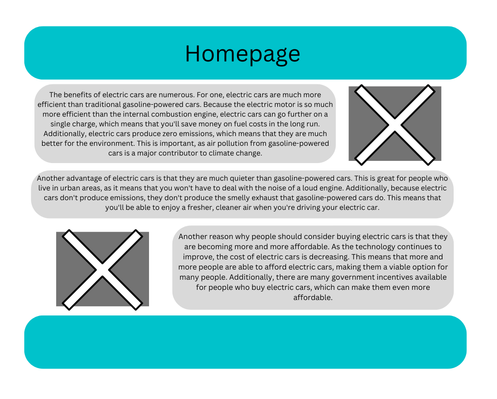
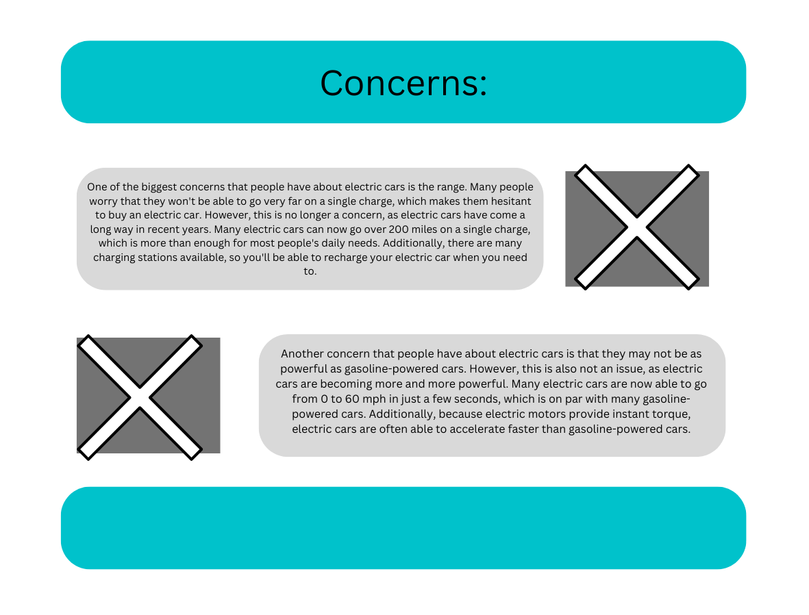

Overview
Purpose
I am creating a website that provides updated relevant information on eletric cars, and adresses popular questions and topics. It will explain why electric cars are better for the environment.
Audience
My target audience is drivers. Anyone with a drivers or learners permit.
Branding
Website Logo
Style Guide
Color Palette
Palette URL: https://coolors.co/242319-2e2d4d-9da3a4-ffebc2-ba1200| Primary | Secondary | Accent 1 | Accent 2 |
|---|---|---|---|
| [#9DA3A4] | [#E2E2D4D] | [#FFEBC2] |
Typography
Heading Font: Lato
Paragraph Font: Dosis
Normal paragraph example
The benefits of electric cars are numerous. For one, electric cars are much more efficient than traditional gasoline-powered cars. Because the electric motor is so much more efficient than the internal combustion engine, electric cars can go further on a single charge, which means that you'll save money on fuel costs in the long run. Additionally, electric cars produce zero emissions, which means that they are much better for the environment. This is important, as air pollution from gasoline-powered cars is a major contributor to climate change.
Colored paragraph example
Another advantage of electric cars is that they are much quieter than gasoline-powered cars. This is great for people who live in urban areas, as it means that you won't have to deal with the noise of a loud engine. Additionally, because electric cars don't produce emissions, they don't produce the smelly exhaust that gasoline-powered cars do. This means that you'll be able to enjoy a fresher, cleaner air when you're driving your electric car.
Navigation
Site Map
Content
Home page
The benefits of electric cars are numerous. For one, electric cars are much more efficient than traditional gasoline-powered cars. Because the electric motor is so much more efficient than the internal combustion engine, electric cars can go further on a single charge, which means that you'll save money on fuel costs in the long run. Additionally, electric cars produce zero emissions, which means that they are much better for the environment. This is important, as air pollution from gasoline-powered cars is a major contributor to climate change. Another advantage of electric cars is that they are much quieter than gasoline-powered cars. This is great for people who live in urban areas, as it means that you won't have to deal with the noise of a loud engine. Additionally, because electric cars don't produce emissions, they don't produce the smelly exhaust that gasoline-powered cars do. This means that you'll be able to enjoy a fresher, cleaner air when you're driving your electric car. Another reason why people should consider buying electric cars is that they are becoming more and more affordable. As the technology continues to improve, the cost of electric cars is decreasing. This means that more and more people are able to afford electric cars, making them a viable option for many people. Additionally, there are many government incentives available for people who buy electric cars, which can make them even more affordable.
Images for the Home page
Concerns
One of the biggest concerns that people have about electric cars is the range. Many people worry that they won't be able to go very far on a single charge, which makes them hesitant to buy an electric car. However, this is no longer a concern, as electric cars have come a long way in recent years. Many electric cars can now go over 200 miles on a single charge, which is more than enough for most people's daily needs. Additionally, there are many charging stations available, so you'll be able to recharge your electric car when you need to. Another concern that people have about electric cars is that they may not be as powerful as gasoline-powered cars. However, this is also not an issue, as electric cars are becoming more and more powerful. Many electric cars are now able to go from 0 to 60 mph in just a few seconds, which is on par with many gasoline-powered cars. Additionally, because electric motors provide instant torque, electric cars are often able to accelerate faster than gasoline-powered cars.
Images for the Page 2
Top 3 models
An electric car is a type of vehicle that is powered by an electric motor rather than a gasoline engine. Some popular electric cars include the Tesla Model 3, the Nissan Leaf, and the Chevrolet Bolt. The Tesla Model 3 is a mid-sized sedan with a range of up to 402 miles on a single charge and a top speed of 145 mph. The Nissan Leaf is a compact car with a range of up to 226 miles on a single charge and a top speed of 90 mph. The Chevrolet Bolt is a compact SUV with a range of 259 miles on a single charge and a top speed of 91 mph. All of these cars have a strong focus on energy efficiency and environmental sustainability.
Images for the Page 3
Wireframes
Create three wireframes for your site. One for each page and list them here
Home

Concerns

Top 3 Models